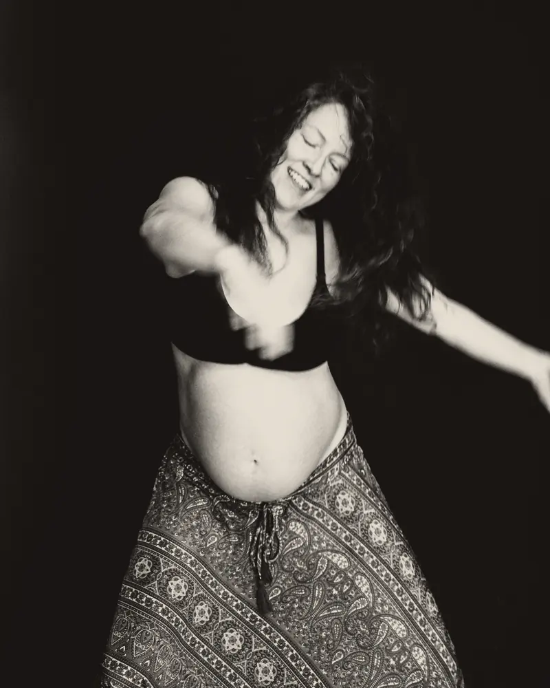
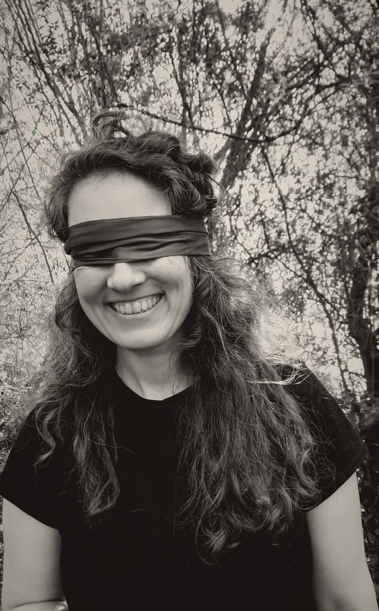
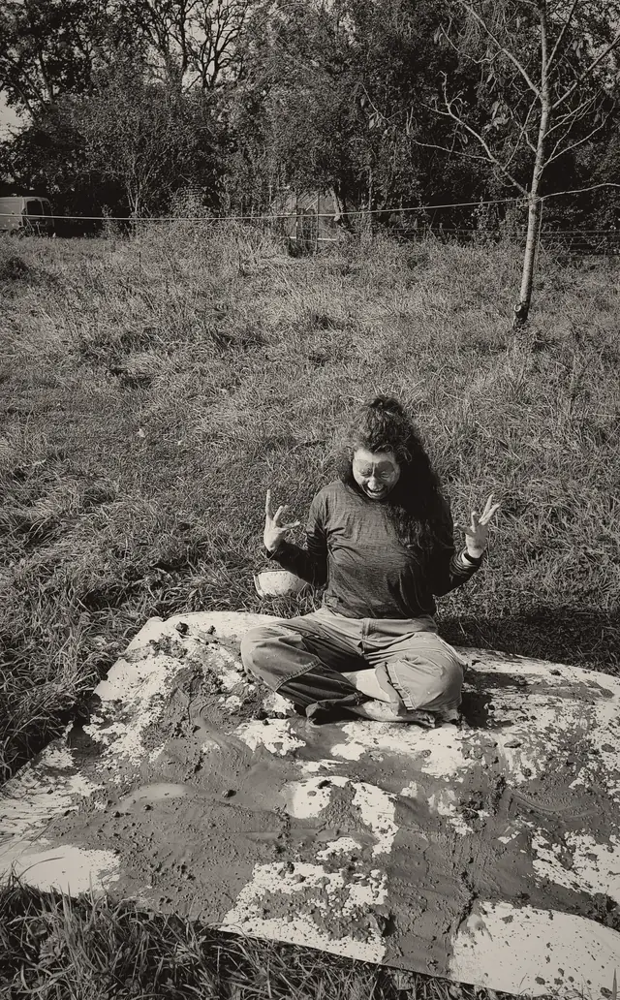
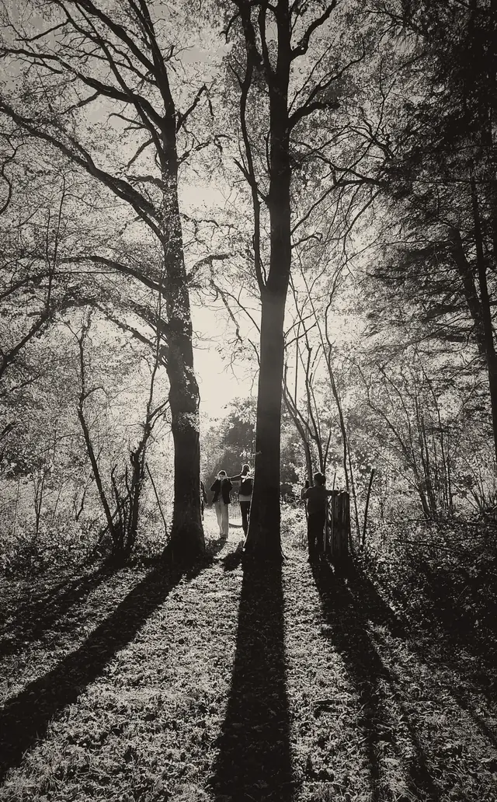
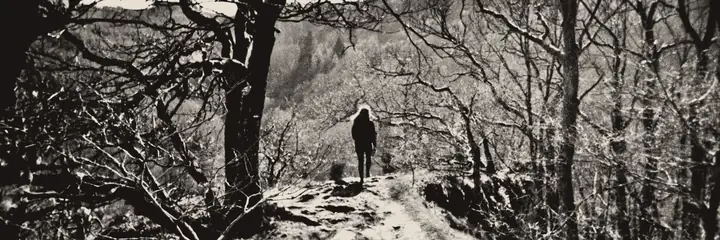
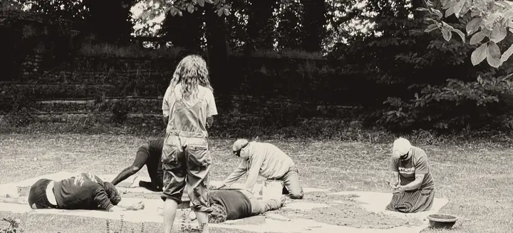

Experiment 01 · sluit je ogen
Wat gebeurt er als ik je zicht wegneem?
Geblinddoekt de natuur in. Bewegen, stilstaan, nieuwsgierig zijn. Wat ontstaat er als je ogen niet meer sturen?
Alles gaat via je ogen
In een wereld waar beelden de hele dag je aandacht opeisen en je gedachten en gewoontes sturen, nodig ik je uit voor een levende ervaring.
Als ik het zicht wegneem, wat wordt er dan wakker?
Minder kijken. Meer voelen.
Experiment 01
Geblinddoekt op pad
Ik neem het zicht weg. Ontdek wat er dan ontstaat. Ik werk met één experiment, één vraag tegelijk. Daarna volgt een volgende uitdaging.
Geblinddoekt wandelen in de natuur
Ik begeleid je langs onbekende paden en nieuwe indrukken: de grond onder je voeten, geluiden die je anders mist.
Experiment 02, 03… wordt vervolgd.


Ik ben Erika
Het bos, dans, ritme en mezelf het zicht ontnemen, soms letterlijk door verlamde oogleden: het bracht mijn hoofd eindelijk tot stilstand. Mijn lijf kreeg het woord.
Als ik mijn ogen sluit en begin te bewegen, eerst heel traag, begint mijn lijf te huilen. Omdat ik eindelijk vrij ben. Wat al zo lang onder mijn huid brandde en duwde, krijgt ruimte. Oordelen en oude gewoontes schuiven naar achteren. Bij mij komt er dan expressie, creativiteit, een wild vuur.
Wat is het bij jou? Dat kan ik niet beschrijven, het is voor iedereen anders. Dat ontdekken we samen.
Ik ben opgeleid in toegepaste ecopsychologie. Mensen samenbrengen doe ik al mijn hele leven: het zit in mijn lijf.


Wie het al beleefde
…ze gaf me het gevoel dat ik veilig was, zodat ik me helemaal kon overgeven aan het donker en aan de verbinding met de aarde.
Al spelend en lachend, met al je zintuigen, maak je contact met de natuur en de aarde (ook letterlijk).
Een warm onthaal, een activiteit waar respect voor iedereen voorop staat, iedereen komt zoals hij is…
Ze geeft zoveel energie van haar zelf in haar sessies wat heel ontwapenend werkt. […] Je hoeft niks te doen, gewoon te zijn.
Na eerdere ateliers.



Hoe het gaat
- Plaats
- Nismes (Viroinval)
- Afspraak
- Parking van de Fondry des Chiens
- Formules
- Individueel, koppel of groep
- Eerst even landen. Dan met de ogen toe samen op wandel: stilstaan, ontdekken.
- Geen vast programma: de sessie ontstaat uit wat zich aanbiedt. Jouw lijf leidt.
- De blinddoek gaat af wanneer jij dat wil, op elk moment.
- Ik begeleid je. Je staat nooit alleen in het donker.
Geen therapie, geen erotiek. Aanraking enkel om je te begeleiden, en altijd met jouw akkoord.

Vragen
En als het regent?
Kleed je zo dat jij je comfortabel voelt, met veel laagjes: we bewegen, zitten en zijn even stil in de natuur. Bij extreem weer neem ik je mee naar een plek binnen.
Wat trek ik aan?
Comfortabele kleren die vuil mogen worden en aangepaste schoenen. En een klein handdoekje, voor als je voeten de aarde willen voelen.
En als ik moet annuleren?
Je kan een sessie tot 48 uur voor aanvang verplaatsen. Kom je niet opdagen, dan wordt de sessie aangerekend. Moet ik zelf annuleren (ziekte, extreem weer), dan verplaatsen we of krijg je je geld terug.
Boek je sessie
- Individuele sessie€ 75
- Koppelsessie€ 135
- Groepssessie€ 35
